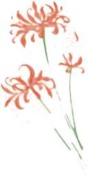

URBAN GREEN
SPACE
Home
Back

Name
Red Spider Lily, known scientifically as “Lycoris radiata”, belongs to Amaryllidaceae.
Features
Appearance: Bright red, spider-like petals that curl back, radiating from a central stem. Thin, strap-like leaves appear after flowering. Cultural significance: Symbolizes the afterlife, rebirth, and memories in East Asian cultures, known as the "flower of the other shore." Season: Blooms late summer to early autumn
Where I found it
At Little Island, a floating park in New York City, I discovered Red Spider Lily in its thoughtfully designed gardens. The island features a diverse range of plants, including some rare and unique species, all with artistic design.